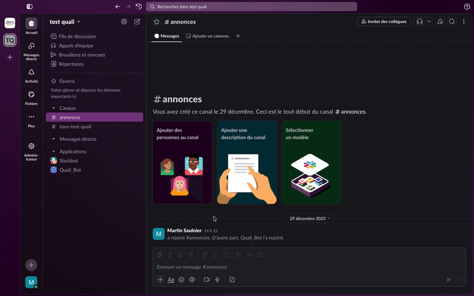
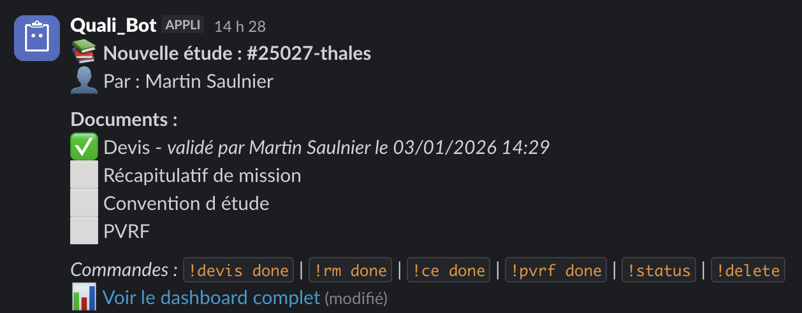
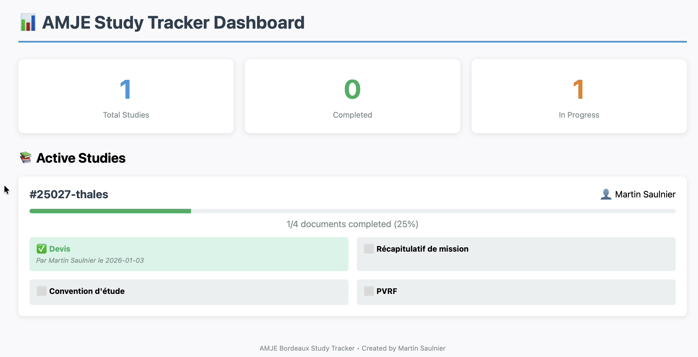

AMJE Slack Automation
The objective of this project was to automate document tracking for internal studies at AMJE Bordeaux by integrating a lightweight workflow directly into Slack. The goal was to centralize follow-up, reduce manual reminders, and improve consistency across study channels.
-
 Python
Python
-
 Slack API
Slack API
-
 Flask
Flask
Project Overview
- Identified limitations in manual document follow-up across Slack study channels.
- Designed an automated workflow triggered by Slack events to centralize information.
- Implemented a persistent checklist system embedded directly in Slack messages.

Workflow Automation
Slack commands were implemented to handle document validation directly within study channels.
-
Each command (e.g.
!devis done,!rm done) triggers a backend update that records the document status, the validator, and the validation date. - The bot updates a single persistent message using the Slack Web API, ensuring that document status remains synchronized and easy to track.

Interaction & Updates
I built a dashboard to visualize ongoing studies and track the validation status of required documents.
- The dashboard is served by a small Flask application that exposes the data collected by the Slack bot.
- Jinja templates are used to dynamically generate the page content based on the current state of each study.

This project resulted in a functional internal automation used to streamline study tracking within AMJE Bordeaux, while providing hands-on experience with event-driven systems and API-based integrations.